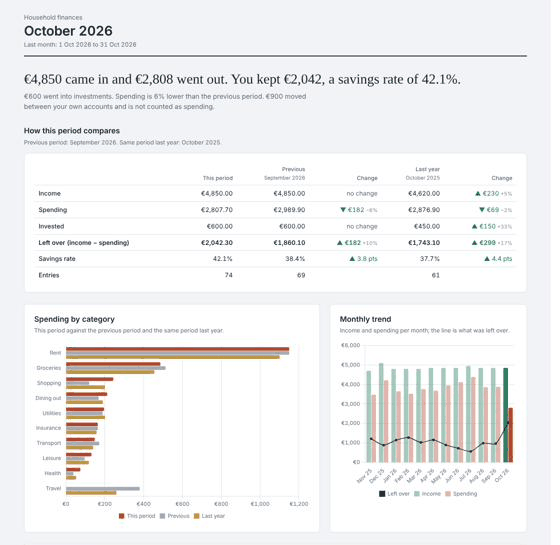

PROJECTS PERSONAL FINANCE GOOGLE SHEETS
Household Finance Tracker
LiveFree template to copy.
A household finance tracker built on Google Sheets. Entering expenses takes seconds from a phone, and a dashboard shows where the money went.
Why I built it
I kept an Excel expense tracker for years. It was heavily customised and did what I needed. But I needed a computer, or at least Excel, to fill in entries, and reconciling accounts was manual. It added up to a lot of small, repetitive work.
I tried plenty of well-rated apps, some free and some paid. Cashew came closest to what I wanted, and it worked well for a while. It is a very good app, and I still have the paid version. It just wasn’t right for me: when something changed, such as an account being closed or an investment being modified, correcting it took a long time. Nothing against the app itself. I kept coming back to my spreadsheet.
The biggest pain was always data entry. That is what this sheet is built around.
Entering data is the point
You can type a row straight into the sheet, or use a simple, phone-friendly Google Form. Entries from the form land in the same table as typed ones, so there is only one place to look. Balances update from what you enter, and you can set up recurring payments so regular costs don’t need typing every month.
I built it step by step with Claude, testing each change and fixing what broke along the way.
What’s in the template
- A dashboard that compares a period with the previous one and with the same period last year.
- A period dropdown, from this month to a custom range, that drives the dashboard.
- Balances that update automatically from your entries.
- Recurring payments.
- Weekly backups into dated Drive folders.
- One currency setting (EUR, USD, GBP, INR, CHF and others) for the sheet and the dashboard.
- A setup wizard. The shareable copy is generated from the sheet I use myself, so it stays in step with it.

How I add entries with Claude
This part is my own setup and is not included in the template. The sheet works with typed rows and the form alone. But chatting an expense in is the quickest way I have found, in Claude on the web or in the Claude app on my phone.
- Create a new project in Claude. I call mine
expense-tracking, but any name works. - Connect Google Drive and Google Sheets to Claude, then add your tracker sheet to the project context by link. Check that Claude is pointing at the right sheet.
- Start a chat in the project and give your first entries in full, for example
10€ spent at Aldi for groceries from Credit card 1. Claude picks the account, category and amount and adds the transaction to the sheet. - The first time in a chat, Claude asks for permission to edit the sheet. Choose “Allow always” and it won’t ask again in that chat.
- After a few entries, shorter messages are enough.
A few things I have found useful:
- Several at once. Set a default account and list the expenses, for example
Use Credit card 1 for all expenses today: <expense 1>, <expense 2>. - Voice. A voice note works too, as long as it is transcribed correctly.
- A fresh chat each month. It avoids long chats that get compacted and lose context. The permission question comes once per chat.
- Free plan. The Google Drive and Google Sheets connectors work on a free Claude plan too, though usage limits may apply.
Try it
- Open the template link and make a copy in your own Google Drive.
- Run the setup wizard.
- Add your first entry.
No bank connection or account linking is needed. Everything runs in your own Google account.
Good to know
- Entry is manual. There is no bank sync.
- There is one currency per copy, and no conversion between currencies.
- Google shows an “unverified app” warning once for each copy, when you authorise the script.
- If your Google account is managed by a workplace or school, the administrator may block the script.